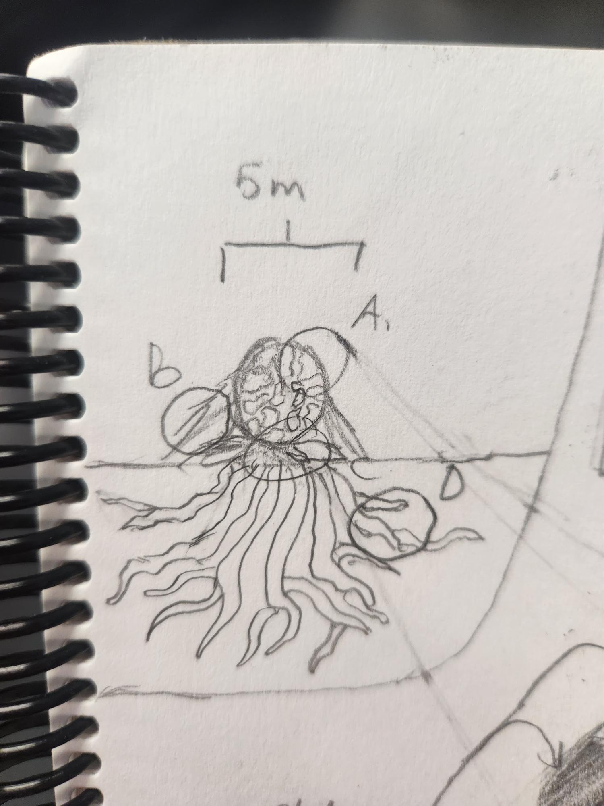

Hearts of Darkness
Information gathered by a research team at V.A.A.S.
A.
Fluid Membrane
The fluid membrane is the space between the plates along the Heart. It is the lightest colored part of the entity and it pulses an electric blue when in dark areas. It is described to be slimy to the touch. It is more viscous than water, but less than syrup.
Plates
The plates are very hard and are chitin like in material. The are an extremely dark color, typically looking black, brown, or dark maroon. They are coated in an acid, the specific type is unknown, however it is very corrosive, and can dissolve most materials. This acid allows the heart to consume nutrients. The plates form in irregular patterns, and are [VOID STONE] in material.
B.
Support Fibers
The support fibers act like cables keeping the Heart upright. They having a slimy protective liquid, with a structural feeling comparable to that of tendon.
C.
Petals?
These are a leafy bed grown from the bottom of the Heart. The leaves are covered in tiny microneedles, however it pierces no material, and secretes no liquid. It is possible that this is a vestigial structure of a previous ancestor.
D.
Roots
The roots of the heart act like a mycelial network for the [HIVE]. The growth of the roots is uncontained, however it appears to not exceed 2 meters from the host Heart. These roots can also absorb nutrients through the ground, however, it appears to only extract water and no other resources unless in a deficit for the plates to feed upon.
E.

Bridge
The roots of the Hearts have a tendency to heavily infest certain areas of the ground. This infested ground has a fleshy, mushy texture. Standing within an infested area for too long leads to [HIVE INFECTION]. It is recommended to avoid these areas. Along with this, special strands of the support fibers form and lengthen, until it reaches a separate area. This bridges the two areas, and allows for the spread of more Hearts. The second image depicts an unknown city overrun with the Hearts. It has been quarantined and the effects of the hive infection are being watched on the civilians previously living in the city.
Return
Void EntitiesMAL